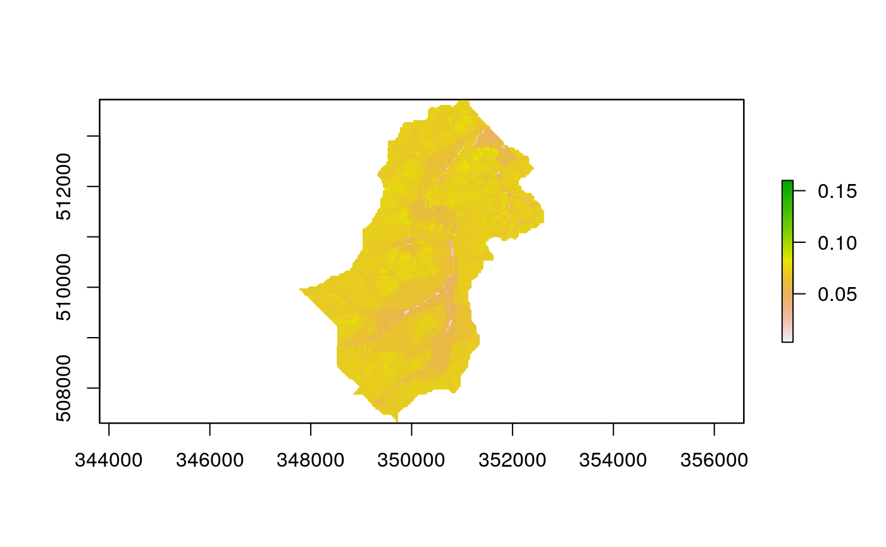
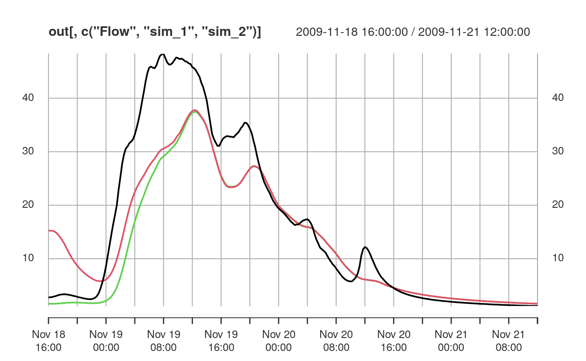

The purpose of this vignette is to provide an outline of the steps needed to perform a Dynamic TOPMODEL simulation and introduce the formats of the data input and returned.
The data used in this example comes from Swindale and is contained within the package and can be loaded with
library(dynatop)
#> Registered S3 method overwritten by 'xts':
#> method from
#> as.zoo.xts zoo
data("Swindale")which returns a variable Swindale with the following components:
For better comparision with a likely analysis we seperate these into a model and observed data variables
A dynamic TOPMODEL is described in a list object. The list has the following elements
which are described in associated vignette. The dynatopGIS package can be used for constructing models.
The input to the model is expected to take the form of an xts object with constant time step whose column names are found in the ‘precip’ and ‘pet’ columns of the HSU tables in the model. Helpful functions for creating and manipulating xts objects can be found [here]{http://rstudio-pubs-static.s3.amazonaws.com/288218_117e183e74964557a5da4fc5902fc671.html}, see also the resample_xts function in this package.
The discharge, precipitation and potential evapotranspiration (PET) inputs for Swindale and contained with swindale_obs on a 15 minute time step.
head(swindale_obs)
#> Warning: timezone of object (GMT) is different than current timezone ().
#> Flow Rainfall PET
#> 2009-11-18 16:00:00 2.78 4e-04 8.878467e-06
#> 2009-11-18 16:15:00 2.80 2e-04 4.762229e-06
#> 2009-11-18 16:30:00 2.85 4e-04 8.585708e-07
#> 2009-11-18 16:45:00 2.94 2e-04 0.000000e+00
#> 2009-11-18 17:00:00 3.02 2e-04 0.000000e+00
#> 2009-11-18 17:15:00 3.15 2e-04 0.000000e+00Note the discharge is in \(m^{3}/s\) while the precipitation and PET are in m accumulated over the timestep.
To use the data with the model we need to set the names of the time series within the model.
The parameter values are stored in the parameter vector swindale_model$parameters. Each parameter value has a unique name. In the current model the parameters are all set to their default values:
print(swindale_model$param)
#> q_sfmax_default s_rzmax_default s_rz0_default ln_t0_default m_default
#> Inf 0.050 0.990 19.000 0.004
#> t_d_default t_sf_default v_ch_default
#> 20.000 100.000 100.000The relationship between the parameters and the HRUs are given in the columns of the HRU tables e.g.
## unsaturated zone time constant
head( swindale_model$hillslope[,c('id','t_d')])
#> id t_d
#> 1 20 t_d_default
#> 2 21 t_d_default
#> 3 22 t_d_default
#> 4 23 t_d_default
#> 5 24 t_d_default
#> 6 25 t_d_defaultAltering parameter values requires changing there values in the parameter vector. For this catchment all HRU have the same parameter values. This could be altered by changing parameter names in the HRU table and adding these parameters to the parameter vector.
In this case we change the parameter vectors to me more representative of the catchment
Simulations are performed by embeddign the model and the observed data into a dynatop object. First the object is created using the model in list form
This step performs some basis checks on the model for conistency. The data can then be added
The model currently consists of two types of HSU; hillslope and channel. These can be run individually with the sim_hillslope and sim_channel methods of sequently with the sim method. The individual methods check that suitabel input data is available, but not how it was generated.
The initial states of the simulations can be specified in the model object. If, as in the case of this example, the states are not specified then any attempt to perform a simulation will fail.
ctch_mdl$sim()
#> Error in self$sim_hillslope(mass_check, keep_states, sub_step): Model states are not initialisedThe states need to be initialised using the initialise method which requires an initial recharge rate. In the following we initialse the states and plot the initial saturates zone storage, using the chaining of commands.

The simulation can now be performed and the flow at the gauge extracted with
Note that the states of the system are now those at the end of the simulation for example:
Rerunning the simulation with the new initial states will of course produce different results
sim2 <- ctch_mdl$sim()$get_gauge_flow()
out <- merge( merge(swindale_obs,sim1),sim2)
names(out) <- c(names(swindale_obs),'sim_1','sim_2')
plot(out[,c('Flow','sim_1','sim_2')])